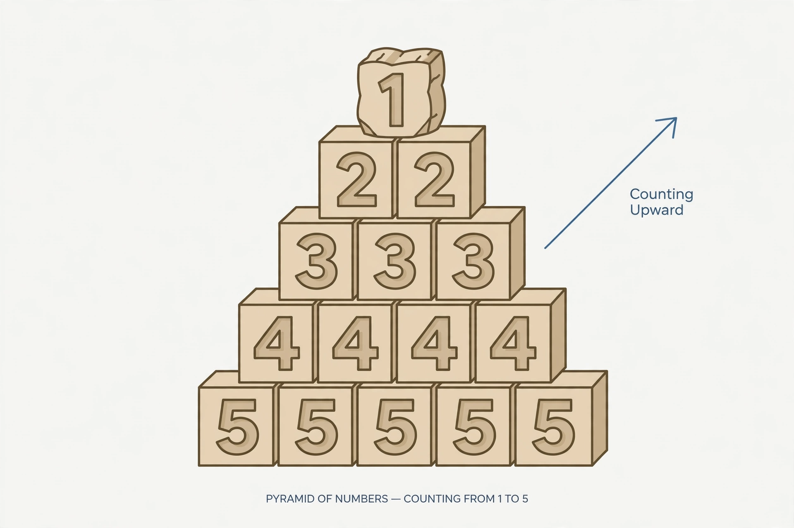

Number

[Image: Blocks stacked as a pyramid labelled with number symbols from counting numbers upward]
A number is a mathematical object used to count, measure and label. The concept has been extended again and again through history: from the natural numbers used for counting, to the integers (admitting negatives), the rational numbers (fractions), the real numbers (filling the number line, including irrationals like √2 and π), and the complex numbers (admitting the square roots of negatives).
Each extension was driven by equations the older system could not solve — subtraction, division, limits, and finally x² = −1 — and each preserves the arithmetic of the system before it. Still stranger systems (quaternions, p-adic numbers) continue the pattern.
What counts as a number
Whether numbers are discovered or invented is one of the oldest questions in the philosophy of mathematics — Platonists treat them as timeless objects, formalists as marks in a formal system, intuitionists as mental constructions.
In everyday life numbers also serve as labels (jersey numbers, telephone numbers) where arithmetic is meaningless — the nominal, ordinal and cardinal uses distinguished by measurement theory.